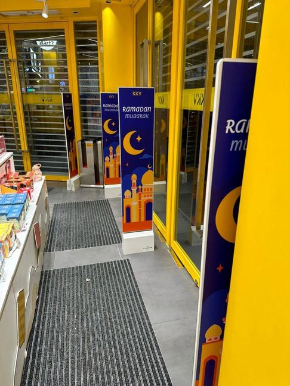
Whole-Project Fit-Out
Whole-project
fit-out
Renovation, exterior sign, window graphics, wayfinding, interior branding and in-store campaign — from bare unit to opening day, by one contractor.
Most retail and office jobs need more than a sign. A store opening needs the fascia, the window decals, the wayfinding, the counter graphics and the campaign standees — usually to a fixed launch date. We take the whole scope so there's one schedule, one crew and one point of contact.
Retail & office rollouts
Grab driver centres and offices, KKV stores, Kodak City Lens, Joymom's and True Life Sciences.
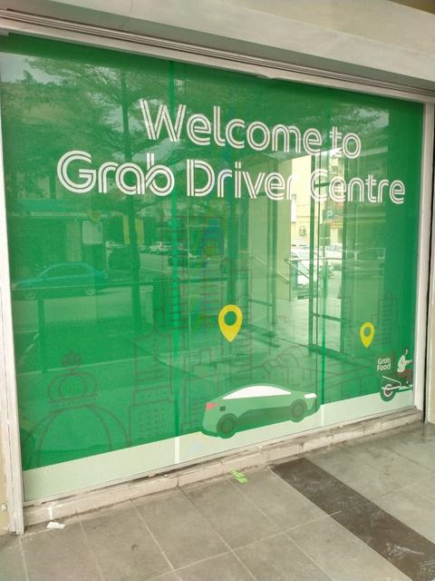
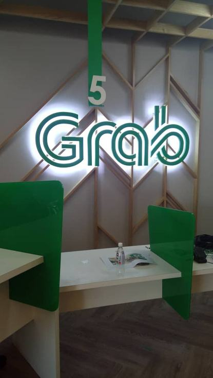
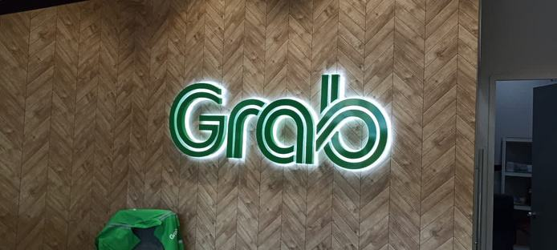
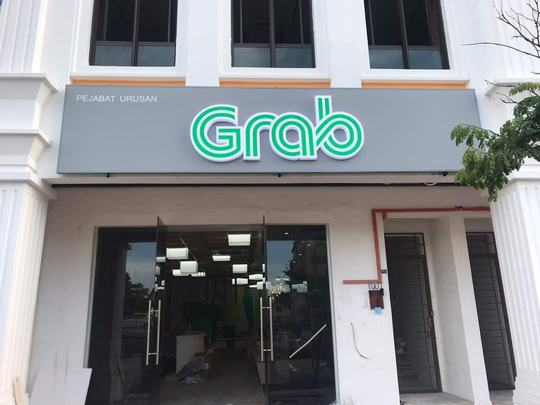
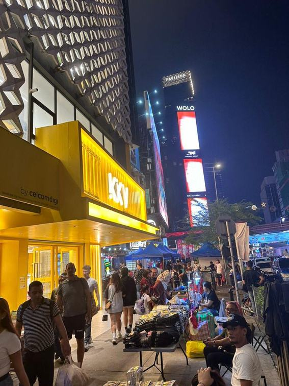
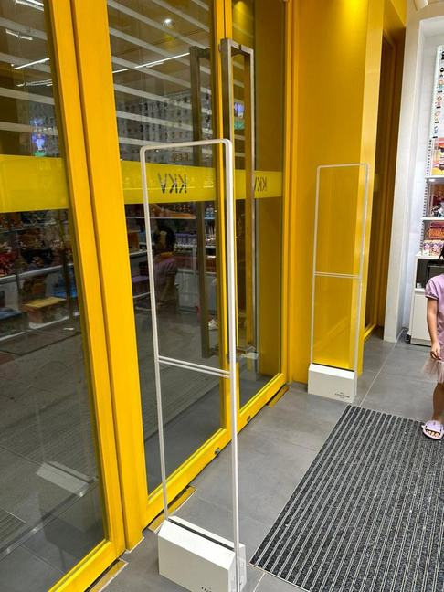
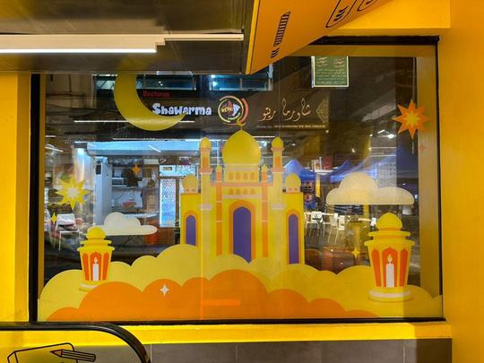
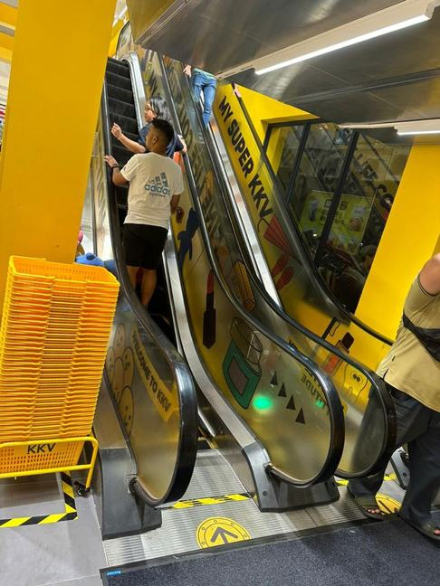
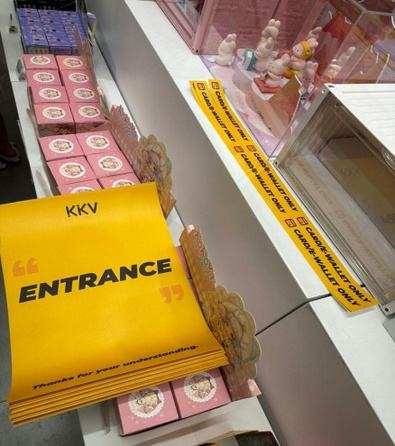
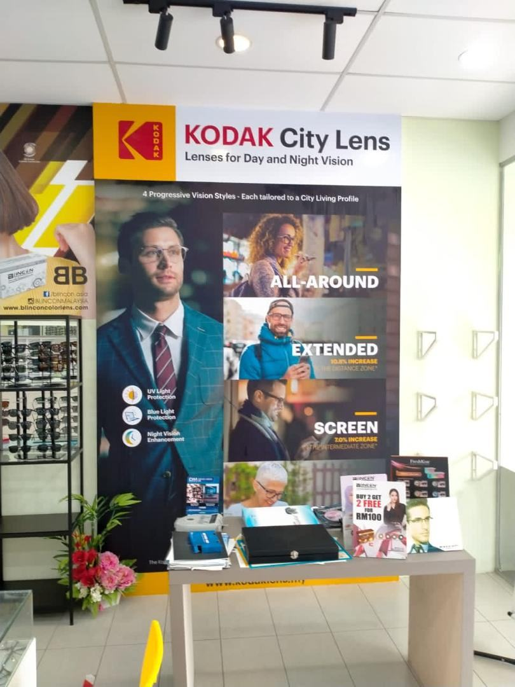
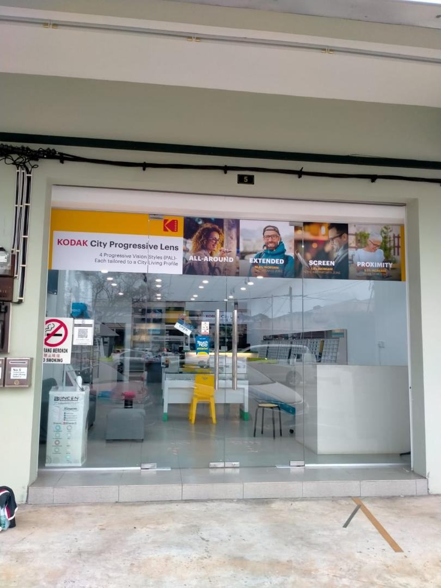
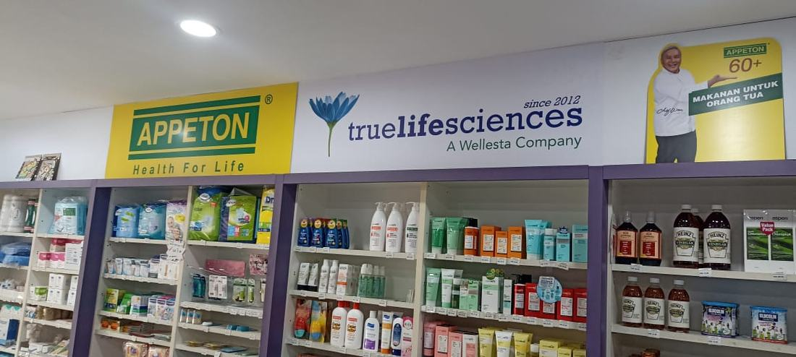
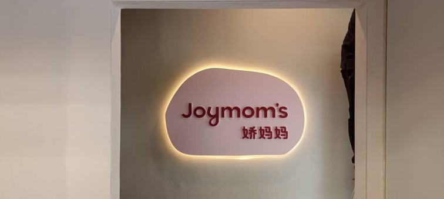
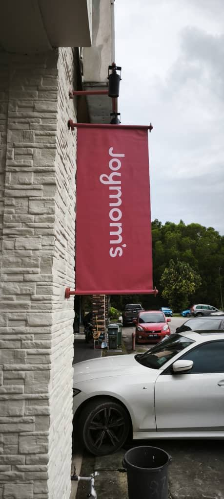
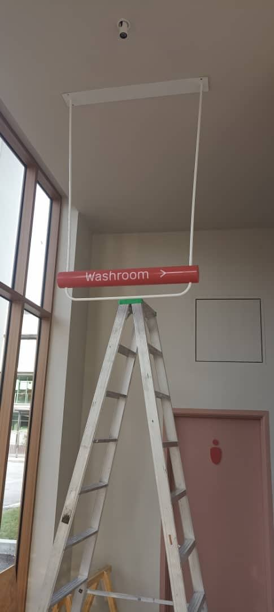
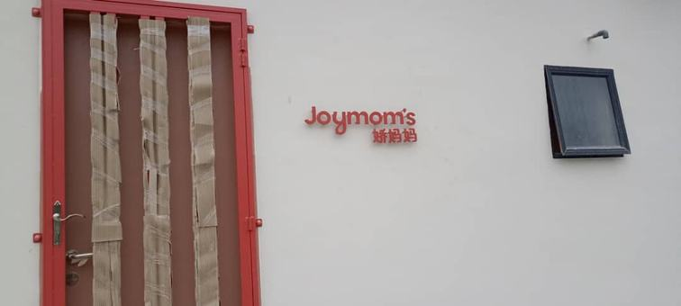
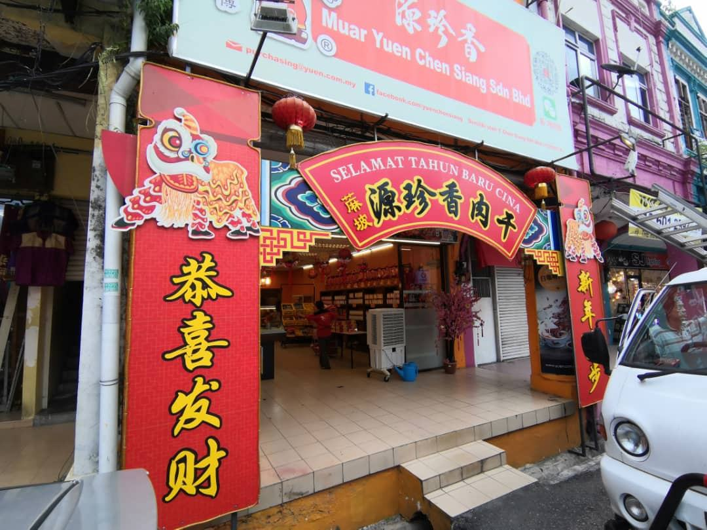
Large-format print
UV-printed panels, contour-cut display boards, banners and hoardings — printed in-house and cut to shape.
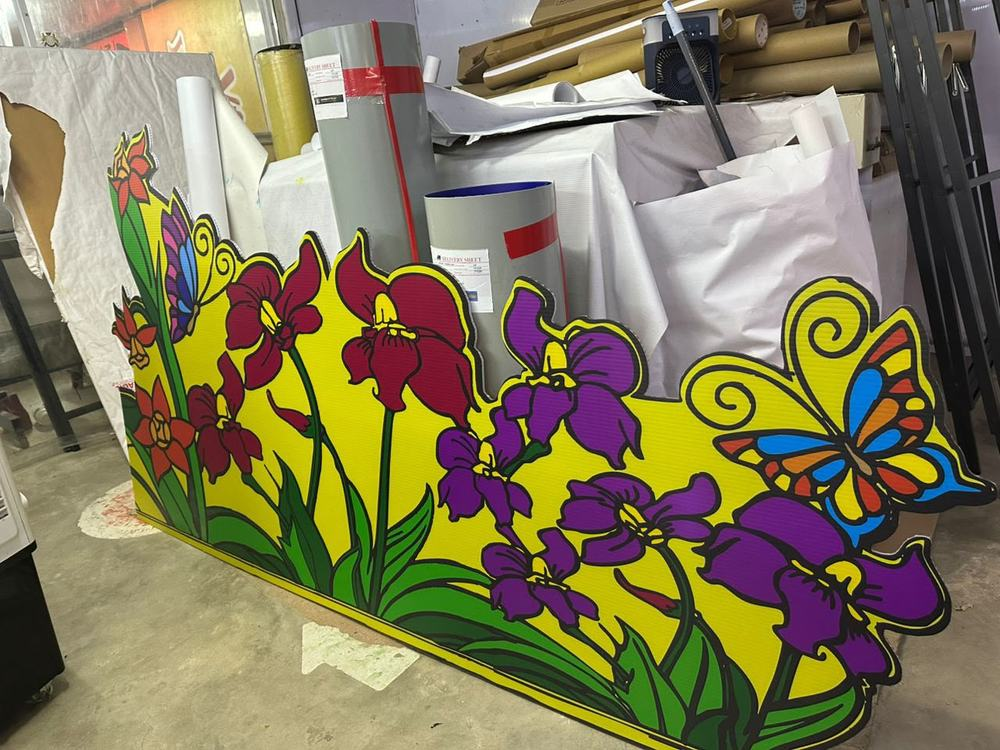
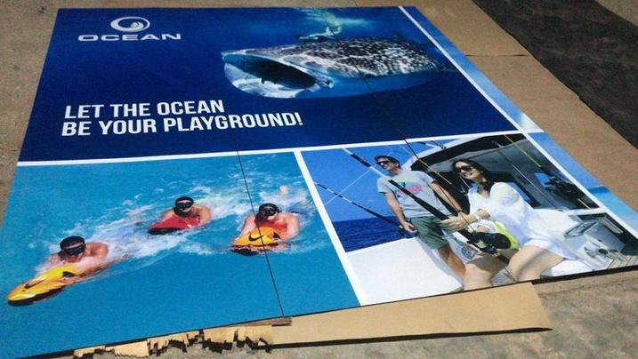
Renovation works
Retail, office and F&B interiors — partitions, ceiling, flooring, carpentry, painting and M&E coordination, taken from bare unit to opening day.
Signage is usually the last thing to go up, which means we are often on site while the unit is still being built. Doing the renovation as well removes the handover gaps — no waiting for one contractor to finish before the next can start, and no arguments over who is responsible when a ceiling height or a power point does not suit the sign.
Partition, ceiling & flooring
Drywall and glass partitions, plaster and suspended ceilings, and floor finishes to suit the unit and the landlord’s specification.
Custom carpentry & joinery
Counters, cabinets, display units, shelving and reception desks built to the drawings, not bought off the shelf.
Painting & skim coat
Skim coat, sealing and finish painting — the base every wall graphic, wallcovering and film needs to sit on properly.
M&E coordination
Electrical, lighting and air-conditioning coordinated with the build, including the supply points a lit sign or smart film partition needs.
Retail, office & F&B
Shop units, corporate offices and F&B outlets — each with different landlord rules, service requirements and inspection points.
Handover to opening day
Renovation, branding and signage scheduled backwards from the launch date, so the unit is ready when it has to be.
Facade & ACP cleaning
Aluminium composite panel, glass panel and facade cleaning — restoring a building frontage that has dulled with weather, exhaust and airborne grime.
ACP cladding looks sharp on handover and then quietly fades. Rain streaks, exhaust film and algae dull the panel finish, and a tired facade makes a well-run business look neglected. We clean and restore panel finishes without stripping the coating — and because we also fabricate and install signage, a facade clean and a sign refresh can be done in the same visit rather than as two separate jobs.
ACP panel cleaning
Aluminium composite panel cleaning and finish restoration using methods matched to the panel coating.
Glass panel & curtain wall washing
Glazing, curtain wall and shopfront glass washed down — removing water marks, dust film and site residue that dull the glass.
Facade & cladding wash
Full building frontage cleaning — cladding, canopies and entrance features.
Signage cleaning & refresh
Existing signboards, lightboxes and channel letters cleaned or refaced while the facade is being worked on.
Scheduled maintenance
Periodic cleaning for retail chains and commercial buildings, so the frontage stays presentable year round.
Exterior identity
Fascia signage, projecting signs, facade branding and entrance portals.
Glass & window
Frosting, one-way vision film, decals and full window campaign dressing.
Interior & wayfinding
Wall graphics, counter numbering, suspended signs and directional systems.
Campaign & seasonal
Standees, shelf talkers, festive dressing and limited-run promotional builds.
Questions
Fit-out questions
What is included in a branding fit-out?
A typical retail or office fit-out includes the exterior fascia sign, window graphics or frosting, interior wall branding, wayfinding and counter signage, and any in-store campaign material such as standees and shelf talkers. We deliver the whole scope as one job.
Do you do renovation as well as signage?
Yes. We take renovation works for retail, office and F&B interiors — partitions, ceiling, flooring, carpentry, painting and M&E coordination — alongside the signage and branding. Doing both removes the handover gap between contractors, and avoids the situation where a ceiling height or power point turns out not to suit the sign.
Can you handle a store opening to a fixed launch date?
Yes. Store openings usually work backwards from a launch date, so we schedule fabrication and installation around it and coordinate the trades on site. Give us the launch date at enquiry stage.
Do you do multi-outlet rollouts?
Yes. We have delivered repeat rollouts for chains including Grab driver centres and offices, KKV stores and Kodak City Lens outlets, keeping specification consistent across locations.
Do you supply window frosting and glass graphics?
Yes. We supply and install frosted film, one-way vision film, cut vinyl decals and full window campaign dressing.